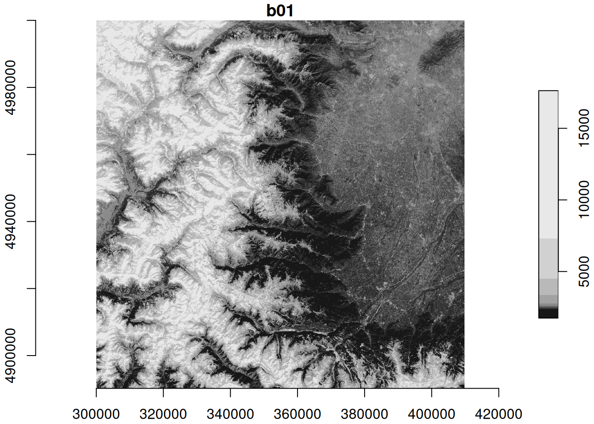
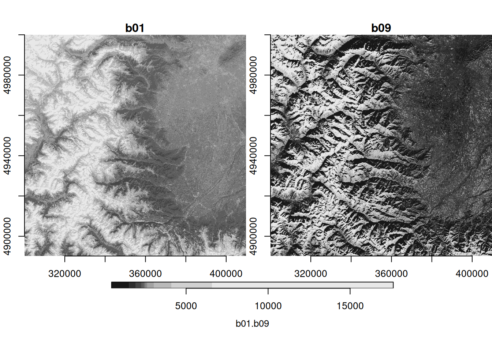

zarr_url = "https://objects.eodc.eu/e05ab01a9d56408d82ac32d69a5aae2a:sample-data/tutorial_data/cpm_v253/S2B_MSIL1C_20250113T103309_N0511_R108_T32TLQ_20250113T122458.zarr"Accessing Zarr archives using Rarr
Introduction
This notebook demonstrates how to retrieve remotely stored Zarr data using the Rarr package in R. We will explore how to read Zarr data (zarrays) and their metadata. For subsequent analysis and visualization we turn the zarray into stars objects which are more suitable for spatial data.
Note
This notebook has a sibling, which demonstrates how to access the same Zarr data using the Rarr package. You can find it here.
What we will learn
- ✏️ How to edit URLs of Zarr archives to make them readable for GDAL
- 🔎 Which read-functions and arguments to use in
starsandterra - 🚧 Current limitations of these packages
Prerequisites
We start at the point where you already have found the URL of your remote Zarr archive. This can be achived, e.g., using STAC, and is demonstrated in other notebooks in this series like “Access the EOPF Zarr STAC API with R”. Here we use the example STAC asset from the Sentinel-2 L1C MSI Zarr Product Exploration notebook which is hosted on EODC’s object storage.
Import packages
library(Rarr) # reading
library(stars) # spatial objects
library(dplyr) # table operations
library(jsonlite) # parsing metadata
library(mapview) # interactive mapsMetadata exploration with Rarr
Note
In this notebook we show the current capabilities and limitations of Rarr in terms of reading Zarr array(s) and their metadata. Successful attempts are marked with a ✅, failed attempts with a ⛔.
Using the Rarr::zarr_overview function we can get meta data for all assets in the remote Zarr archive as a table. Here list all arrays and their data type, compression, dimensions, etc.
zarr_content = zarr_overview(zarr_url, as_data_frame = T) |>
mutate(var = sub(zarr_url, "", path)) |>
select(var, everything(), -path)
filter(zarr_content, grepl("reflectance", var)) var nchunks data_type compressor dim
1 /measurements/reflectance/r10m/b02 36 uint16 blosc 10980, 10980
2 /measurements/reflectance/r10m/b03 36 uint16 blosc 10980, 10980
3 /measurements/reflectance/r10m/b04 36 uint16 blosc 10980, 10980
4 /measurements/reflectance/r10m/b08 36 uint16 blosc 10980, 10980
5 /measurements/reflectance/r10m/x 1 int64 blosc 10980
6 /measurements/reflectance/r10m/y 1 int64 blosc 10980
7 /measurements/reflectance/r20m/b05 36 uint16 blosc 5490, 5490
8 /measurements/reflectance/r20m/b06 36 uint16 blosc 5490, 5490
9 /measurements/reflectance/r20m/b07 36 uint16 blosc 5490, 5490
10 /measurements/reflectance/r20m/b11 36 uint16 blosc 5490, 5490
11 /measurements/reflectance/r20m/b12 36 uint16 blosc 5490, 5490
12 /measurements/reflectance/r20m/b8a 36 uint16 blosc 5490, 5490
13 /measurements/reflectance/r20m/x 1 int64 blosc 5490
14 /measurements/reflectance/r20m/y 1 int64 blosc 5490
15 /measurements/reflectance/r60m/b01 36 uint16 blosc 1830, 1830
16 /measurements/reflectance/r60m/b09 36 uint16 blosc 1830, 1830
17 /measurements/reflectance/r60m/b10 36 uint16 blosc 1830, 1830
18 /measurements/reflectance/r60m/x 1 int64 blosc 1830
19 /measurements/reflectance/r60m/y 1 int64 blosc 1830
chunk_dim
1 1830, 1830
2 1830, 1830
3 1830, 1830
4 1830, 1830
5 10980
6 10980
7 915, 915
8 915, 915
9 915, 915
10 915, 915
11 915, 915
12 915, 915
13 5490
14 5490
15 305, 305
16 305, 305
17 305, 305
18 1830
19 1830We can see that all Sentinel-2 bands are in the archive, but split into directories based on spatial resolution (10, 20, 60 meters), which have different dimensions (number and size of pixels).
Click to show the full Zarr archive contentprint(zarr_content) var nchunks data_type
1 /conditions/geometry/angle 1 unicode224
2 /conditions/geometry/band 1 unicode96
3 /conditions/geometry/detector 1 int64
4 /conditions/geometry/mean_sun_angles 1 float64
5 /conditions/geometry/mean_viewing_incidence_angles 1 float64
6 /conditions/geometry/sun_angles 1 float64
7 /conditions/geometry/viewing_incidence_angles 4 float64
8 /conditions/geometry/x 1 int64
9 /conditions/geometry/y 1 int64
10 /conditions/mask/detector_footprint/r10m/b02 36 uint8
11 /conditions/mask/detector_footprint/r10m/b03 36 uint8
12 /conditions/mask/detector_footprint/r10m/b04 36 uint8
13 /conditions/mask/detector_footprint/r10m/b08 36 uint8
14 /conditions/mask/detector_footprint/r10m/x 1 int64
15 /conditions/mask/detector_footprint/r10m/y 1 int64
16 /conditions/mask/detector_footprint/r20m/b05 36 uint8
17 /conditions/mask/detector_footprint/r20m/b06 36 uint8
18 /conditions/mask/detector_footprint/r20m/b07 36 uint8
19 /conditions/mask/detector_footprint/r20m/b11 36 uint8
20 /conditions/mask/detector_footprint/r20m/b12 36 uint8
21 /conditions/mask/detector_footprint/r20m/b8a 36 uint8
22 /conditions/mask/detector_footprint/r20m/x 1 int64
23 /conditions/mask/detector_footprint/r20m/y 1 int64
24 /conditions/mask/detector_footprint/r60m/b01 36 uint8
25 /conditions/mask/detector_footprint/r60m/b09 36 uint8
26 /conditions/mask/detector_footprint/r60m/b10 36 uint8
27 /conditions/mask/detector_footprint/r60m/x 1 int64
28 /conditions/mask/detector_footprint/r60m/y 1 int64
29 /conditions/mask/l1c_classification/r60m/b00 36 uint8
30 /conditions/mask/l1c_classification/r60m/x 1 int64
31 /conditions/mask/l1c_classification/r60m/y 1 int64
32 /conditions/meteorology/cams/aod1240 1 float32
33 /conditions/meteorology/cams/aod469 1 float32
34 /conditions/meteorology/cams/aod550 1 float32
35 /conditions/meteorology/cams/aod670 1 float32
36 /conditions/meteorology/cams/aod865 1 float32
37 /conditions/meteorology/cams/bcaod550 1 float32
38 /conditions/meteorology/cams/duaod550 1 float32
39 /conditions/meteorology/cams/isobaricInhPa 1 float64
40 /conditions/meteorology/cams/latitude 1 float64
41 /conditions/meteorology/cams/longitude 1 float64
42 /conditions/meteorology/cams/number 1 int64
43 /conditions/meteorology/cams/omaod550 1 float32
44 /conditions/meteorology/cams/ssaod550 1 float32
45 /conditions/meteorology/cams/step 1 int64
46 /conditions/meteorology/cams/suaod550 1 float32
47 /conditions/meteorology/cams/surface 1 float64
48 /conditions/meteorology/cams/time 1 int64
49 /conditions/meteorology/cams/valid_time 1 int64
50 /conditions/meteorology/cams/z 1 float32
51 /conditions/meteorology/ecmwf/isobaricInhPa 1 float64
52 /conditions/meteorology/ecmwf/latitude 1 float64
53 /conditions/meteorology/ecmwf/longitude 1 float64
54 /conditions/meteorology/ecmwf/msl 1 float32
55 /conditions/meteorology/ecmwf/number 1 int64
56 /conditions/meteorology/ecmwf/r 1 float32
57 /conditions/meteorology/ecmwf/step 1 int64
58 /conditions/meteorology/ecmwf/surface 1 float64
59 /conditions/meteorology/ecmwf/tco3 1 float32
60 /conditions/meteorology/ecmwf/tcwv 1 float32
61 /conditions/meteorology/ecmwf/time 1 int64
62 /conditions/meteorology/ecmwf/u10 1 float32
63 /conditions/meteorology/ecmwf/v10 1 float32
64 /conditions/meteorology/ecmwf/valid_time 1 int64
65 /measurements/reflectance/r10m/b02 36 uint16
66 /measurements/reflectance/r10m/b03 36 uint16
67 /measurements/reflectance/r10m/b04 36 uint16
68 /measurements/reflectance/r10m/b08 36 uint16
69 /measurements/reflectance/r10m/x 1 int64
70 /measurements/reflectance/r10m/y 1 int64
71 /measurements/reflectance/r20m/b05 36 uint16
72 /measurements/reflectance/r20m/b06 36 uint16
73 /measurements/reflectance/r20m/b07 36 uint16
74 /measurements/reflectance/r20m/b11 36 uint16
75 /measurements/reflectance/r20m/b12 36 uint16
76 /measurements/reflectance/r20m/b8a 36 uint16
77 /measurements/reflectance/r20m/x 1 int64
78 /measurements/reflectance/r20m/y 1 int64
79 /measurements/reflectance/r60m/b01 36 uint16
80 /measurements/reflectance/r60m/b09 36 uint16
81 /measurements/reflectance/r60m/b10 36 uint16
82 /measurements/reflectance/r60m/x 1 int64
83 /measurements/reflectance/r60m/y 1 int64
84 /quality/l1c_quicklook/r10m/band 1 int64
85 /quality/l1c_quicklook/r10m/tci 108 uint8
86 /quality/l1c_quicklook/r10m/x 1 int64
87 /quality/l1c_quicklook/r10m/y 1 int64
88 /quality/mask/r10m/b02 36 uint8
89 /quality/mask/r10m/b03 36 uint8
90 /quality/mask/r10m/b04 36 uint8
91 /quality/mask/r10m/b08 36 uint8
92 /quality/mask/r10m/x 1 int64
93 /quality/mask/r10m/y 1 int64
94 /quality/mask/r20m/b05 36 uint8
95 /quality/mask/r20m/b06 36 uint8
96 /quality/mask/r20m/b07 36 uint8
97 /quality/mask/r20m/b11 36 uint8
98 /quality/mask/r20m/b12 36 uint8
99 /quality/mask/r20m/b8a 36 uint8
100 /quality/mask/r20m/x 1 int64
101 /quality/mask/r20m/y 1 int64
102 /quality/mask/r60m/b01 36 uint8
103 /quality/mask/r60m/b09 36 uint8
104 /quality/mask/r60m/b10 36 uint8
105 /quality/mask/r60m/x 1 int64
106 /quality/mask/r60m/y 1 int64
compressor dim chunk_dim
1 blosc 2 2
2 blosc 13 13
3 blosc 7 7
4 blosc 2 2
5 blosc 13, 2 13, 2
6 blosc 2, 23, 23 2, 23, 23
7 blosc 13, 7, 2.... 7, 4, 2,....
8 blosc 23 23
9 blosc 23 23
10 blosc 10980, 10980 1830, 1830
11 blosc 10980, 10980 1830, 1830
12 blosc 10980, 10980 1830, 1830
13 blosc 10980, 10980 1830, 1830
14 blosc 10980 10980
15 blosc 10980 10980
16 blosc 5490, 5490 915, 915
17 blosc 5490, 5490 915, 915
18 blosc 5490, 5490 915, 915
19 blosc 5490, 5490 915, 915
20 blosc 5490, 5490 915, 915
21 blosc 5490, 5490 915, 915
22 blosc 5490 5490
23 blosc 5490 5490
24 blosc 1830, 1830 305, 305
25 blosc 1830, 1830 305, 305
26 blosc 1830, 1830 305, 305
27 blosc 1830 1830
28 blosc 1830 1830
29 blosc 1830, 1830 305, 305
30 blosc 1830 1830
31 blosc 1830 1830
32 blosc 9, 9 9, 9
33 blosc 9, 9 9, 9
34 blosc 9, 9 9, 9
35 blosc 9, 9 9, 9
36 blosc 9, 9 9, 9
37 blosc 9, 9 9, 9
38 blosc 9, 9 9, 9
39 <NA>
40 blosc 9 9
41 blosc 9 9
42 <NA>
43 blosc 9, 9 9, 9
44 blosc 9, 9 9, 9
45 <NA>
46 blosc 9, 9 9, 9
47 <NA>
48 <NA>
49 <NA>
50 blosc 9, 9 9, 9
51 <NA>
52 blosc 9 9
53 blosc 9 9
54 blosc 9, 9 9, 9
55 <NA>
56 blosc 9, 9 9, 9
57 <NA>
58 <NA>
59 blosc 9, 9 9, 9
60 blosc 9, 9 9, 9
61 <NA>
62 blosc 9, 9 9, 9
63 blosc 9, 9 9, 9
64 <NA>
65 blosc 10980, 10980 1830, 1830
66 blosc 10980, 10980 1830, 1830
67 blosc 10980, 10980 1830, 1830
68 blosc 10980, 10980 1830, 1830
69 blosc 10980 10980
70 blosc 10980 10980
71 blosc 5490, 5490 915, 915
72 blosc 5490, 5490 915, 915
73 blosc 5490, 5490 915, 915
74 blosc 5490, 5490 915, 915
75 blosc 5490, 5490 915, 915
76 blosc 5490, 5490 915, 915
77 blosc 5490 5490
78 blosc 5490 5490
79 blosc 1830, 1830 305, 305
80 blosc 1830, 1830 305, 305
81 blosc 1830, 1830 305, 305
82 blosc 1830 1830
83 blosc 1830 1830
84 blosc 3 3
85 blosc 3, 10980.... 1, 1830,....
86 blosc 10980 10980
87 blosc 10980 10980
88 blosc 10980, 10980 1830, 1830
89 blosc 10980, 10980 1830, 1830
90 blosc 10980, 10980 1830, 1830
91 blosc 10980, 10980 1830, 1830
92 blosc 10980 10980
93 blosc 10980 10980
94 blosc 5490, 5490 915, 915
95 blosc 5490, 5490 915, 915
96 blosc 5490, 5490 915, 915
97 blosc 5490, 5490 915, 915
98 blosc 5490, 5490 915, 915
99 blosc 5490, 5490 915, 915
100 blosc 5490 5490
101 blosc 5490 5490
102 blosc 1830, 1830 305, 305
103 blosc 1830, 1830 305, 305
104 blosc 1830, 1830 305, 305
105 blosc 1830 1830
106 blosc 1830 1830Now that we have an overview of the content, let’s get some related metadata. Rarr provides the read_zattrs function for this purpose, which looks for the .zattrs file inside the archive.
⛔ Unfortunately we were not successful when applying it to our remote archive.
read_zattrs(zarr_url)Error in read_zattrs(zarr_url): The group or array does not contain attributes (.zattrs)read_zattrs(file.path(zarr_url, ".zattrs"))Error in read_zattrs(file.path(zarr_url, ".zattrs")): The group or array does not contain attributes (.zattrs)✅ As a simple workaround we can read the JSON directly:
zattrs = read_json(file.path(zarr_url, ".zattrs"))
names(zattrs)[1] "other_metadata" "other_metadata4" "stac_discovery" print(zarr_content) var nchunks data_type
1 /conditions/geometry/angle 1 unicode224
2 /conditions/geometry/band 1 unicode96
3 /conditions/geometry/detector 1 int64
4 /conditions/geometry/mean_sun_angles 1 float64
5 /conditions/geometry/mean_viewing_incidence_angles 1 float64
6 /conditions/geometry/sun_angles 1 float64
7 /conditions/geometry/viewing_incidence_angles 4 float64
8 /conditions/geometry/x 1 int64
9 /conditions/geometry/y 1 int64
10 /conditions/mask/detector_footprint/r10m/b02 36 uint8
11 /conditions/mask/detector_footprint/r10m/b03 36 uint8
12 /conditions/mask/detector_footprint/r10m/b04 36 uint8
13 /conditions/mask/detector_footprint/r10m/b08 36 uint8
14 /conditions/mask/detector_footprint/r10m/x 1 int64
15 /conditions/mask/detector_footprint/r10m/y 1 int64
16 /conditions/mask/detector_footprint/r20m/b05 36 uint8
17 /conditions/mask/detector_footprint/r20m/b06 36 uint8
18 /conditions/mask/detector_footprint/r20m/b07 36 uint8
19 /conditions/mask/detector_footprint/r20m/b11 36 uint8
20 /conditions/mask/detector_footprint/r20m/b12 36 uint8
21 /conditions/mask/detector_footprint/r20m/b8a 36 uint8
22 /conditions/mask/detector_footprint/r20m/x 1 int64
23 /conditions/mask/detector_footprint/r20m/y 1 int64
24 /conditions/mask/detector_footprint/r60m/b01 36 uint8
25 /conditions/mask/detector_footprint/r60m/b09 36 uint8
26 /conditions/mask/detector_footprint/r60m/b10 36 uint8
27 /conditions/mask/detector_footprint/r60m/x 1 int64
28 /conditions/mask/detector_footprint/r60m/y 1 int64
29 /conditions/mask/l1c_classification/r60m/b00 36 uint8
30 /conditions/mask/l1c_classification/r60m/x 1 int64
31 /conditions/mask/l1c_classification/r60m/y 1 int64
32 /conditions/meteorology/cams/aod1240 1 float32
33 /conditions/meteorology/cams/aod469 1 float32
34 /conditions/meteorology/cams/aod550 1 float32
35 /conditions/meteorology/cams/aod670 1 float32
36 /conditions/meteorology/cams/aod865 1 float32
37 /conditions/meteorology/cams/bcaod550 1 float32
38 /conditions/meteorology/cams/duaod550 1 float32
39 /conditions/meteorology/cams/isobaricInhPa 1 float64
40 /conditions/meteorology/cams/latitude 1 float64
41 /conditions/meteorology/cams/longitude 1 float64
42 /conditions/meteorology/cams/number 1 int64
43 /conditions/meteorology/cams/omaod550 1 float32
44 /conditions/meteorology/cams/ssaod550 1 float32
45 /conditions/meteorology/cams/step 1 int64
46 /conditions/meteorology/cams/suaod550 1 float32
47 /conditions/meteorology/cams/surface 1 float64
48 /conditions/meteorology/cams/time 1 int64
49 /conditions/meteorology/cams/valid_time 1 int64
50 /conditions/meteorology/cams/z 1 float32
51 /conditions/meteorology/ecmwf/isobaricInhPa 1 float64
52 /conditions/meteorology/ecmwf/latitude 1 float64
53 /conditions/meteorology/ecmwf/longitude 1 float64
54 /conditions/meteorology/ecmwf/msl 1 float32
55 /conditions/meteorology/ecmwf/number 1 int64
56 /conditions/meteorology/ecmwf/r 1 float32
57 /conditions/meteorology/ecmwf/step 1 int64
58 /conditions/meteorology/ecmwf/surface 1 float64
59 /conditions/meteorology/ecmwf/tco3 1 float32
60 /conditions/meteorology/ecmwf/tcwv 1 float32
61 /conditions/meteorology/ecmwf/time 1 int64
62 /conditions/meteorology/ecmwf/u10 1 float32
63 /conditions/meteorology/ecmwf/v10 1 float32
64 /conditions/meteorology/ecmwf/valid_time 1 int64
65 /measurements/reflectance/r10m/b02 36 uint16
66 /measurements/reflectance/r10m/b03 36 uint16
67 /measurements/reflectance/r10m/b04 36 uint16
68 /measurements/reflectance/r10m/b08 36 uint16
69 /measurements/reflectance/r10m/x 1 int64
70 /measurements/reflectance/r10m/y 1 int64
71 /measurements/reflectance/r20m/b05 36 uint16
72 /measurements/reflectance/r20m/b06 36 uint16
73 /measurements/reflectance/r20m/b07 36 uint16
74 /measurements/reflectance/r20m/b11 36 uint16
75 /measurements/reflectance/r20m/b12 36 uint16
76 /measurements/reflectance/r20m/b8a 36 uint16
77 /measurements/reflectance/r20m/x 1 int64
78 /measurements/reflectance/r20m/y 1 int64
79 /measurements/reflectance/r60m/b01 36 uint16
80 /measurements/reflectance/r60m/b09 36 uint16
81 /measurements/reflectance/r60m/b10 36 uint16
82 /measurements/reflectance/r60m/x 1 int64
83 /measurements/reflectance/r60m/y 1 int64
84 /quality/l1c_quicklook/r10m/band 1 int64
85 /quality/l1c_quicklook/r10m/tci 108 uint8
86 /quality/l1c_quicklook/r10m/x 1 int64
87 /quality/l1c_quicklook/r10m/y 1 int64
88 /quality/mask/r10m/b02 36 uint8
89 /quality/mask/r10m/b03 36 uint8
90 /quality/mask/r10m/b04 36 uint8
91 /quality/mask/r10m/b08 36 uint8
92 /quality/mask/r10m/x 1 int64
93 /quality/mask/r10m/y 1 int64
94 /quality/mask/r20m/b05 36 uint8
95 /quality/mask/r20m/b06 36 uint8
96 /quality/mask/r20m/b07 36 uint8
97 /quality/mask/r20m/b11 36 uint8
98 /quality/mask/r20m/b12 36 uint8
99 /quality/mask/r20m/b8a 36 uint8
100 /quality/mask/r20m/x 1 int64
101 /quality/mask/r20m/y 1 int64
102 /quality/mask/r60m/b01 36 uint8
103 /quality/mask/r60m/b09 36 uint8
104 /quality/mask/r60m/b10 36 uint8
105 /quality/mask/r60m/x 1 int64
106 /quality/mask/r60m/y 1 int64
compressor dim chunk_dim
1 blosc 2 2
2 blosc 13 13
3 blosc 7 7
4 blosc 2 2
5 blosc 13, 2 13, 2
6 blosc 2, 23, 23 2, 23, 23
7 blosc 13, 7, 2.... 7, 4, 2,....
8 blosc 23 23
9 blosc 23 23
10 blosc 10980, 10980 1830, 1830
11 blosc 10980, 10980 1830, 1830
12 blosc 10980, 10980 1830, 1830
13 blosc 10980, 10980 1830, 1830
14 blosc 10980 10980
15 blosc 10980 10980
16 blosc 5490, 5490 915, 915
17 blosc 5490, 5490 915, 915
18 blosc 5490, 5490 915, 915
19 blosc 5490, 5490 915, 915
20 blosc 5490, 5490 915, 915
21 blosc 5490, 5490 915, 915
22 blosc 5490 5490
23 blosc 5490 5490
24 blosc 1830, 1830 305, 305
25 blosc 1830, 1830 305, 305
26 blosc 1830, 1830 305, 305
27 blosc 1830 1830
28 blosc 1830 1830
29 blosc 1830, 1830 305, 305
30 blosc 1830 1830
31 blosc 1830 1830
32 blosc 9, 9 9, 9
33 blosc 9, 9 9, 9
34 blosc 9, 9 9, 9
35 blosc 9, 9 9, 9
36 blosc 9, 9 9, 9
37 blosc 9, 9 9, 9
38 blosc 9, 9 9, 9
39 <NA>
40 blosc 9 9
41 blosc 9 9
42 <NA>
43 blosc 9, 9 9, 9
44 blosc 9, 9 9, 9
45 <NA>
46 blosc 9, 9 9, 9
47 <NA>
48 <NA>
49 <NA>
50 blosc 9, 9 9, 9
51 <NA>
52 blosc 9 9
53 blosc 9 9
54 blosc 9, 9 9, 9
55 <NA>
56 blosc 9, 9 9, 9
57 <NA>
58 <NA>
59 blosc 9, 9 9, 9
60 blosc 9, 9 9, 9
61 <NA>
62 blosc 9, 9 9, 9
63 blosc 9, 9 9, 9
64 <NA>
65 blosc 10980, 10980 1830, 1830
66 blosc 10980, 10980 1830, 1830
67 blosc 10980, 10980 1830, 1830
68 blosc 10980, 10980 1830, 1830
69 blosc 10980 10980
70 blosc 10980 10980
71 blosc 5490, 5490 915, 915
72 blosc 5490, 5490 915, 915
73 blosc 5490, 5490 915, 915
74 blosc 5490, 5490 915, 915
75 blosc 5490, 5490 915, 915
76 blosc 5490, 5490 915, 915
77 blosc 5490 5490
78 blosc 5490 5490
79 blosc 1830, 1830 305, 305
80 blosc 1830, 1830 305, 305
81 blosc 1830, 1830 305, 305
82 blosc 1830 1830
83 blosc 1830 1830
84 blosc 3 3
85 blosc 3, 10980.... 1, 1830,....
86 blosc 10980 10980
87 blosc 10980 10980
88 blosc 10980, 10980 1830, 1830
89 blosc 10980, 10980 1830, 1830
90 blosc 10980, 10980 1830, 1830
91 blosc 10980, 10980 1830, 1830
92 blosc 10980 10980
93 blosc 10980 10980
94 blosc 5490, 5490 915, 915
95 blosc 5490, 5490 915, 915
96 blosc 5490, 5490 915, 915
97 blosc 5490, 5490 915, 915
98 blosc 5490, 5490 915, 915
99 blosc 5490, 5490 915, 915
100 blosc 5490 5490
101 blosc 5490 5490
102 blosc 1830, 1830 305, 305
103 blosc 1830, 1830 305, 305
104 blosc 1830, 1830 305, 305
105 blosc 1830 1830
106 blosc 1830 1830The same information can be retrieved with sf::gdal_utils('mdiminfo', ...).
Reading Zarr data with Rarr
⛔ Rarr, like stars and terra, is not capable of reading multiple arrays from the remote archive simultaneously.
read_zarr_array(zarr_url)Error: ✅ But if a single band array is selected it works.
band_variable = "/measurements/reflectance/r60m/b01"
zarray = read_zarr_array(paste0(zarr_url, band_variable))
str(zarray) int [1:1830, 1:1830] 9548 8117 7158 5906 7007 7523 5999 6570 7165 6666 ...However, the function returen a matrix lacking any spatial metadata (e.g. CRS) or coordinates. Careful, the array has flipped dimensions! But we can access X and Y coordinates for each pixel seperately.
zarray_60m_x = paste0(zarr_url, "/measurements/reflectance/r60m/x") |>
read_zarr_array()
zarray_60m_y = paste0(zarr_url, "/measurements/reflectance/r60m/y") |>
read_zarr_array()
print(range(zarray_60m_x))[1] 300030 409770print(range(zarray_60m_y))[1] 4890270 5000010Let’s construct a stars object from the components found in the Zarr archive: - data array - X and Y coordinates - CRS (from metadata)
# read CRS from attributes
zarr_crs = zattrs$stac_discovery$properties$`proj:epsg`
# band name
var = basename(band_variable)
# read and transpose matrix before converting to stars
zz = st_as_stars(zarray |> t()) |>
st_set_dimensions(1, names = "X", values = zarray_60m_x) |>
st_set_dimensions(2, names = "Y", values = zarray_60m_y) |>
setNames(var)
st_crs(zz) = st_crs(zarr_crs)
zzstars object with 2 dimensions and 1 attribute
attribute(s), summary of first 1e+05 cells:
Min. 1st Qu. Median Mean 3rd Qu. Max.
b01 2299 2542 2628 4541.124 5304 17556
dimension(s):
from to offset delta refsys point x/y
X 1 1830 300030 60 WGS 84 / UTM zone 32N FALSE [x]
Y 1 1830 5000010 -60 WGS 84 / UTM zone 32N FALSE [y]plot(zz, axes = TRUE)
all in one function:
st_read_zarray = function(path, var, res, ...){
# stopifnot valid zarr url / variable / resolution ...
# get metadata including CRS
zattrs = jsonlite::read_json(file.path(path, ".zattrs"))
zarr_crs = zattrs$stac_discovery$properties$`proj:epsg`
# zattrs$stac_discovery$properties$`eopf:resolutions`
res_char = switch(as.character(res),
"10" = "r10m",
"20" = "r20m",
"60" = "r60m",
stop("Resolution must be one of 10, 20, or 60.")
)
# ...: make use of index arguments of read_zarr_array??
zarray = file.path(path, "measurements/reflectance", res_char, var) |>
read_zarr_array(...)
zarray_x = file.path(path, "measurements/reflectance", res_char, "x") |>
read_zarr_array(...)
zarray_y = file.path(path, "measurements/reflectance", res_char, "y") |>
read_zarr_array(...)
# transpose matrixe before converting to stars
z = zarray |>
t() |>
st_as_stars() |>
#st_set_crs(st_crs(zarr_crs)) |> # does not seem to work in the pipeline.
st_set_dimensions(1, names = "X", values = zarray_x) |>
st_set_dimensions(2, names = "Y", values = zarray_y) |>
setNames(var)
st_crs(z) = st_crs(zarr_crs)
return(z)
}Read and combine multiple zarrays
✅ Now we can read multiple bands, combine to a single multi-band object, and visualize them.
system.time({
b01 = st_read_zarray(zarr_url, "b01", 60)
b09 = st_read_zarray(zarr_url, "b09", 60)
(multi_band = c(b01, b09) |> merge())
}) user system elapsed
17.071 0.634 30.394 plot(multi_band, axes = TRUE)downsample set to 1
Benchmark
What is faster and/or more efficient - GDAL or Rarr?
vsi_prefix = "ZARR:/vsicurl/"
vsi_url = paste0(vsi_prefix, dplyr::as_label(zarr_url))
f_stars = function(){rs = read_stars(paste(vsi_url, band_variable, sep = ":"))}
f_mdim = function(){sm = read_mdim(vsi_url, band_variable, proxy = FALSE) |>
setNames(basename(band_variable))}
f_rast = function(){tr = terra::rast(vsi_url, band_variable) |> terra::toMemory()}
f_rarr = function(){rr = st_read_zarray(zarr_url, "b01", 60)}bench::mark(f_stars(), f_mdim(), f_rast(), f_rarr(),
check = F, iterations = 5)# A tibble: 4 × 6
expression min median `itr/sec` mem_alloc `gc/sec`
<bch:expr> <bch:tm> <bch:tm> <dbl> <bch:byt> <dbl>
1 f_stars() 11.5s 11.6s 0.0858 26MB 0
2 f_mdim() 11.1s 11.5s 0.0866 26.1MB 0.0217
3 f_rast() 11.5s 11.9s 0.0843 88.1KB 0
4 f_rarr() 12.4s 12.4s 0.0805 108.9MB 0.322 The benchmark does not reveal a clear winner in terms of speed. However, Rarr seems to allocate more memory compared to stars and terra.
💪 Now it is your turn
- 🔭 Task: Supply more arguments to
st_read_zarrayand pass a subset to read only parts on an array. - 💾 Task: Try writing zarrays to disk using
Rarr::write_zarr_array() - Read the Rarr documentation.
Conclusion
In this notebook we have demonstrated how to access remote Zarr archives in R using the Rarr package. We have seen that it is possible to read specific data arrays, but read_zarr_array lacks the ability of accessing anything other than the raw array. To combine it with a CRS or coordinates we need to leverage a spatial class like stars and manually set the relevant metadata.
What’s next?
Further tests should evaluate wether data retrieved via Rarr versus GDAL are identical in terms of spatial extent and offset.
Explore this related notebook which demonstrates how to access the same Zarr data using the GDAL Zarr driver via the stars and terra packages.